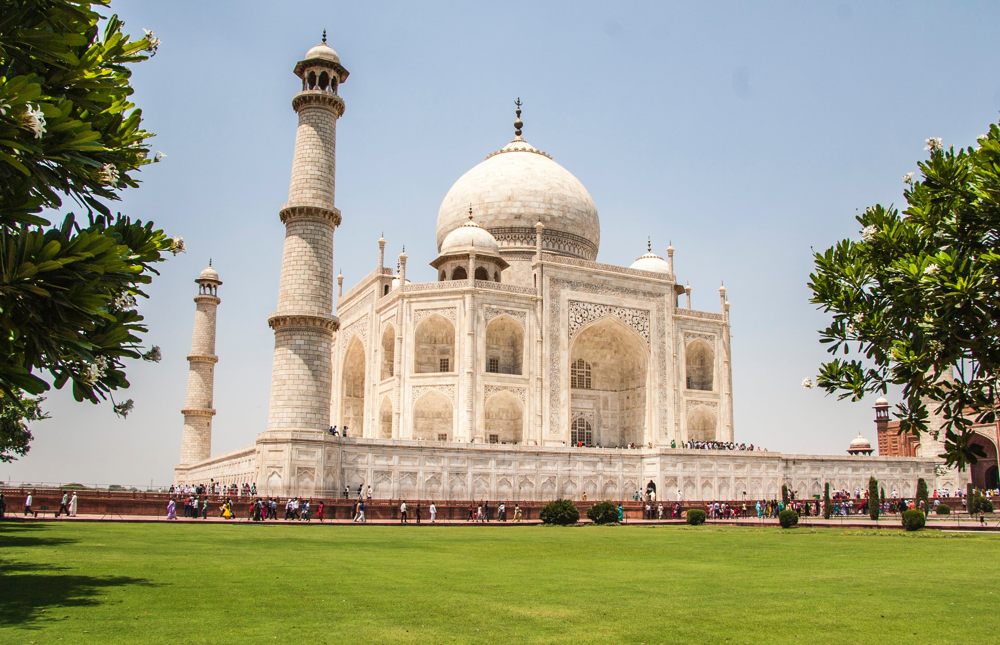

Introduction:
The Taj Mahal, a world-renowned masterpiece and a symbol of undying love, stands as a testament to the architectural brilliance and cultural richness of India. Nestled on the banks of the Yamuna River in Agra, Uttar Pradesh, this ivory-white marble mausoleum has captivated the hearts and minds of millions around the globe. Commissioned by the Mughal emperor Shah Jahan in memory of his beloved wife Mumtaz Mahal, the Taj Mahal is not just a monument but a poetic expression of love, beauty, and craftsmanship.
Historical Background:
The Taj Mahal's construction began in 1632 and took approximately 22 years to complete, employing thousands of artisans and craftsmen. The chief architect, Ustad Ahmad Lahori, drew inspiration from Persian and Mughal architectural styles, resulting in a harmonious blend of geometric precision and intricate ornamentation. The Taj Mahal is a part of a larger complex that includes a mosque, a guest house, and well-maintained gardens.


Architectural Marvel:
The mausoleum's architectural grandeur is unparalleled. The main structure is a perfect symmetrical masterpiece, featuring a massive white marble dome that seemingly floats above the main building. Four minarets frame the Taj Mahal, adding to its visual symmetry and elegance. The intricate detailing on the marble facade, including calligraphy, floral patterns, and delicate inlays of semi-precious stones, reflects the high level of craftsmanship achieved during the Mughal era.

Symbolism of Love:
The Taj Mahal is not merely a physical structure but a profound symbol of love and devotion. Legend has it that Shah Jahan was grief-stricken after the death of Mumtaz Mahal during childbirth. In her memory, he commissioned the construction of the Taj Mahal, pouring his heart into creating a monument that would immortalize their love. The mausoleum's central chamber houses the ornate tombs of Shah Jahan and Mumtaz Mahal, forever united in death as they were in life.
Cultural Significance:
Recognized as a UNESCO World Heritage Site, the Taj Mahal attracts millions of visitors annually. Its cultural significance extends beyond its architectural beauty; it serves as a representation of India's rich history and cultural heritage. The site stands as a symbol of religious tolerance and artistic achievement, showcasing the synthesis of various cultural influences that characterized the Mughal era.
Conservation and Challenges:
Over the years, the Taj Mahal has faced challenges such as environmental pollution, urbanization, and the wear and tear caused by a high volume of visitors. Conservation efforts, including restrictions on industrial activities in the vicinity and periodic cleaning, have been implemented to preserve this cultural gem for future generations. The delicate marble facade requires meticulous care to prevent deterioration and discoloration.
Conclusion:
The Taj Mahal remains an everlasting tribute to love and craftsmanship, captivating the world with its timeless beauty. Its cultural significance, architectural marvel, and symbolic representation make it a treasure not just for India but for all of humanity. As we marvel at the Taj Mahal, we are reminded that some creations transcend time, leaving an indelible mark on the canvas of human history.